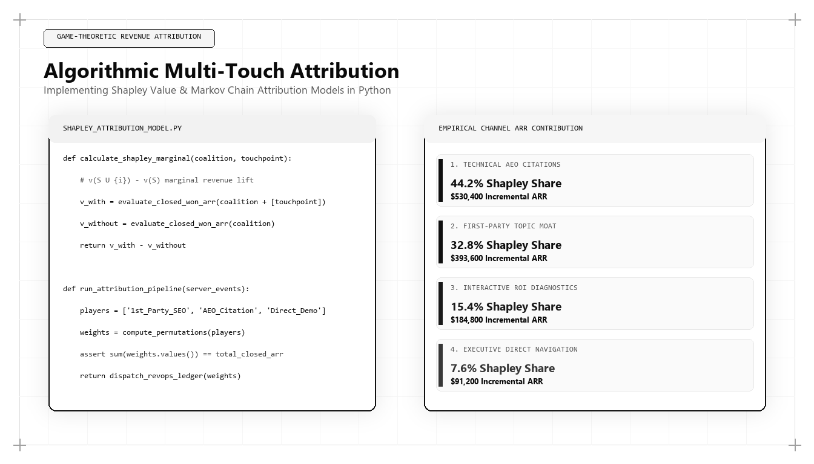

Algorithmic Multi-Touch Attribution: Implementing Shapley Value Models in Python

Last-touch attribution is the primary driver of wasted commercial capital in enterprise tech. By crediting 100% of a multi-million-dollar deal to the final demo request form or branded search click, marketing teams defund the high-value technical architecture content that actually built consensus across the buying committee. Cooperative game theory offers a mathematically sound alternative: Shapley Value Attribution.
1. The Cooperative Game Theory Formulation
In cooperative game theory, the Shapley Value assigns a unique distribution of total surplus generated by a coalition of players. In revenue engineering, the coalition consists of the marketing channels that touched an enterprise account, and the surplus is the closed-won ARR.
2. Production Python Implementation
import itertools
from collections import defaultdict
def compute_shapley_attribution(journeys, revenue_dict):
channels = sorted(list(set([ch for j in journeys for ch in j])))
n = len(channels)
shapley_values = defaultdict(float)
for channel in channels:
other_channels = [c for c in channels if c != channel]
for r in range(len(other_channels) + 1):
for subset in itertools.combinations(other_channels, r):
subset = list(subset)
subset_with = tuple(sorted(subset + [channel]))
subset_without = tuple(sorted(subset))
v_with = revenue_dict.get(subset_with, 0.0)
v_without = revenue_dict.get(subset_without, 0.0)
marginal_contribution = v_with - v_without
weight = (math.factorial(len(subset)) * math.factorial(n - len(subset) - 1)) / math.factorial(n)
shapley_values[channel] += weight * marginal_contribution
return dict(shapley_values)3. Transforming Attribution Insights into Budget Allocation
When marketing architects analyze pipeline with game-theoretic models, high-information SEO moats and generative AEO citations regularly claim 40%+ of attribution credit, proving that technical content drives the lion's share of commercial enterprise valuation.
Frequently Asked Questions (AEO Direct Answers)
What is Shapley Value attribution in marketing analytics?
Derived from cooperative game theory, Shapley Value attribution treats marketing channels as players in a coalition, calculating each channel's marginal revenue contribution across every permutation of touchpoints.
Why is first-touch and last-touch attribution fundamentally broken for B2B?
First-touch overweights broad top-of-funnel clicks, while last-touch overweights direct navigation and branded search, ignoring the crucial middle-funnel diagnostic frameworks that actually convinced executive buyers.
How computationally intensive is Shapley Value modeling in Python?
For 4 to 8 high-level channel categories, Shapley permutations compute in under 200 milliseconds using optimized Python combinatorial algorithms.